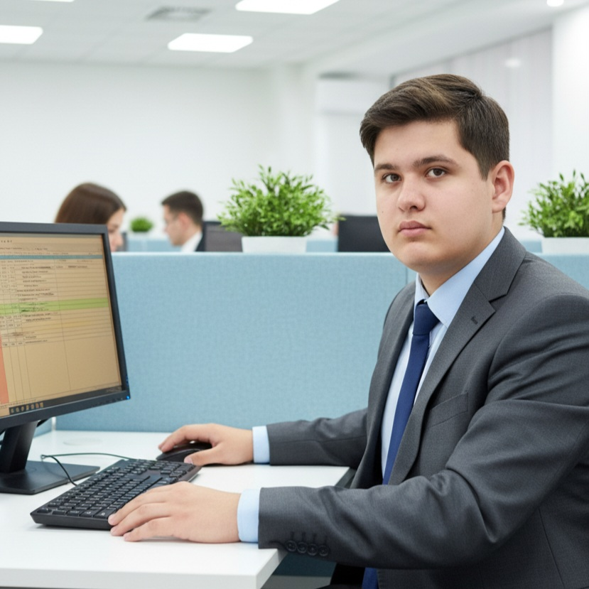

Texnologiya ilə gələcək yaradıram. Robototexnika, proqramlaşdırma və innovativ layihələr.
Yaş
Sinif
Layihə

Mən Asim Qaraxanov, 19 fevral 2010-cu ildə anadan olmuşam. Hazırda Pirşağıda 112 nömrəli məktəbdə 10-cu sinifdə oxuyuram. Proqramlaşdırma, robototexnika və fizika ən sevdiyim sahələrdir. Məqsədim universitetdə süni intellekt və robototexnika üzrə ixtisaslaşmaqdır.
Orta məktəb təhsili; sevdiyim fənlər: Riyaziyyat, İnformatika, Fizika.
Python əsasları, kiçik veb layihələr və təqdimatlar.
Arduino, sensorlar, motorlar və sadə robotlar üzərində iş.
Təhsilim və təcrübəm boyunca əldə etdiyim bilik və bacarıqları təsdiqləyən sertifikatlar. KINGS Riyaziyyat Olimpiadaları, KƏNQURU müsabiqəsi və digər mükafatlar.
Sertifikatlara BaxPython, HTML, CSS, JavaScript — əsas səviyyə. Kiçik veb layihələr və təcrübələr.
Arduino, sensorlar və motor idarəsi. Prototiplər hazırlamışam.
Layihələr zamanı analitik düşüncə və təkrarsız yanaşma.
Layihələrdə komanda üzvü kimi iştirak.
Layihələr, əməkdaşlıq və ya suallar üçün əlaqə saxlayın: